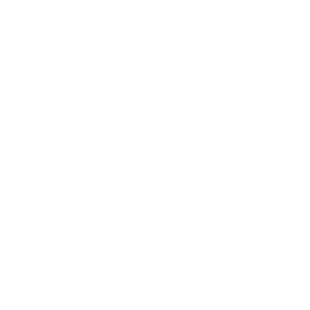
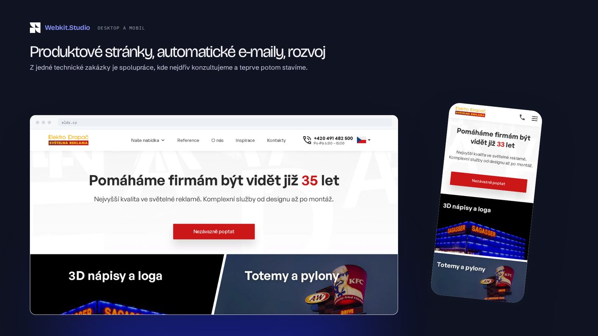
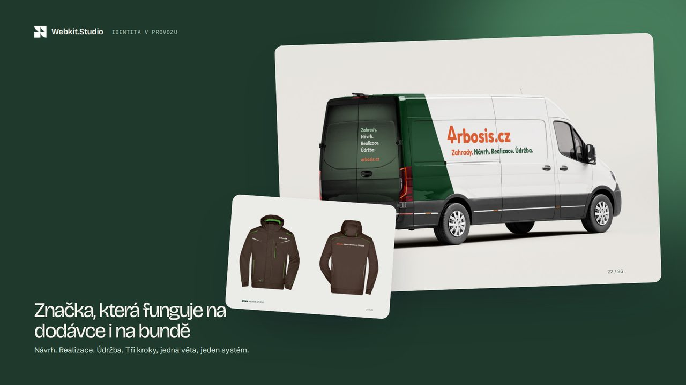
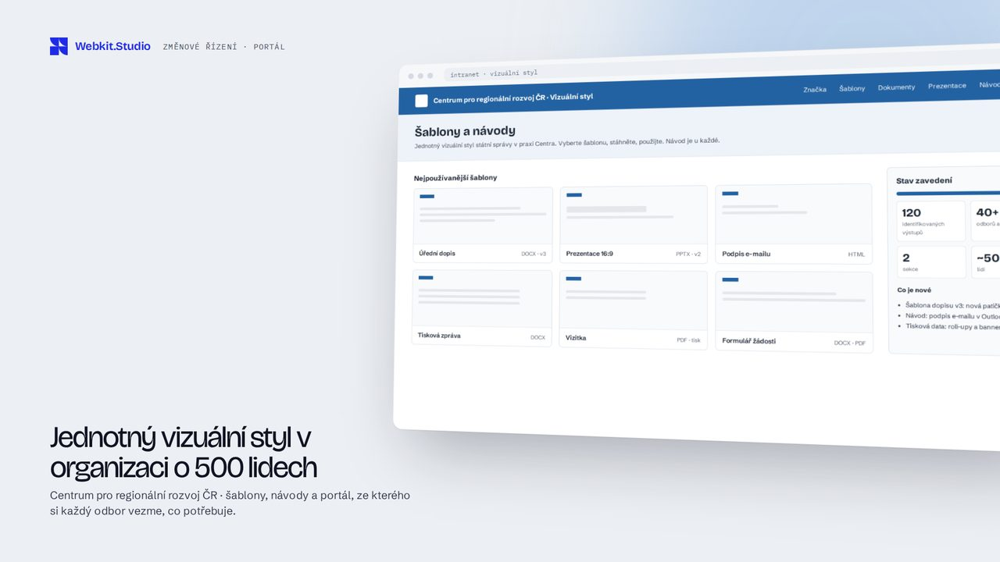
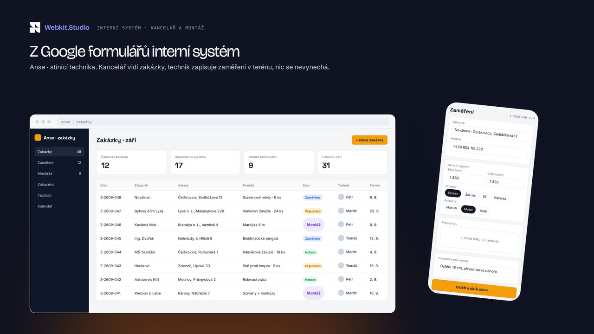

Nikdo se nezeptal, co má web udělat.
Projekt začne návrhem místo otázkou. Výsledkem je hezký web, který nikomu nevolá.
Analýza
Zadání
Návrh
Spuštění
Weby, webové aplikace a vizuální identity pro firmy, které chtějí, aby jim web přiváděl zakázky.
01 Proč většina webů nepřivede zakázky
Projekt začne návrhem místo otázkou. Výsledkem je hezký web, který nikomu nevolá.
Agentura na design, freelancer na kód, další firma na texty. Rozhodnutí se ztrácejí mezi e-maily.
Rok bez změny, bez měření, bez rozvoje. Další velký redesign přijde za pět let.
My se ptáme dřív, než cokoliv navrhneme. Proto jsme Webkit.Studio.
02 Co pro vás uděláme
03 Ukázka
Klikněte na blikající místa. Každé rozhodnutí má za sebou data.
Posuňte dolů
Takhle přemýšlíme o každém webu.04 Jak to u nás běží
Co má web pro firmu udělat a pro koho.
Schůzka a schváleníRozsah, struktura, cena a termín.
Schůzka a schváleníKlikatelný prototyp a vizuální návrh.
Dvě kola připomínekHotový web s obsahem, otestovaný.
Kontrola před spuštěnímSpuštěný web, měření, měsíční rozvoj.
Měsíční vyhodnocení05 Projekty

Nový web otevřel cestu na německý trh a ze zakázky se stala dlouhodobá spolupráce.
Zobrazit projekt
Z poptávky na logo vznikla celá vizuální identita: auta, oblečení, faktury i nový web.
Zobrazit projekt
Jednotný vizuální styl pro 500 lidí, 120 sjednocených výstupů a interní portál s návody.
Zobrazit projekt
Interní systém, který nahradil Google formuláře a vede techniky v terénu krok za krokem.
Zobrazit projekt07 Zbývá jediné
Ozveme se do jednoho pracovního dne. Nebo si rovnou vyberte termín.